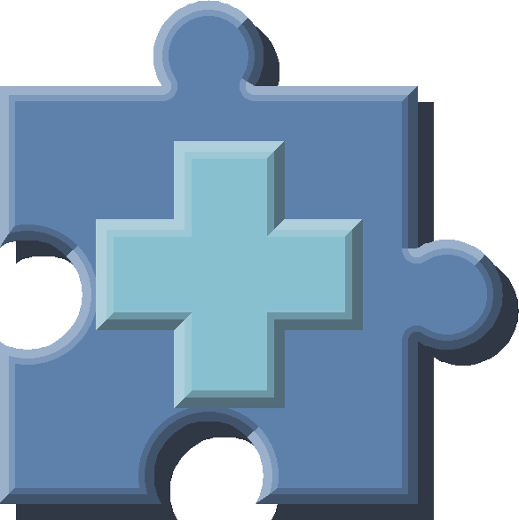

<!doctype html>
<!--the banner's wordmark over the stitched themes; ?look=a..d&blurb=0..3 picks a variant-->
<meta charset="utf-8" />
<style>
  @font-face { font-family: Nunito; src: url(../../src/fonts/nunito.woff2); font-weight: 200 1000 }
  @font-face { font-family: Orbitron; src: url(../../src/fonts/orbitron.woff2); font-weight: 400 900 }
  @font-face { font-family: Pixel; src: url(../../src/fonts/ms_sans_serif_bold.woff2) }
  @font-face { font-family: Chakra; src: url(../../src/fonts/chakra-petch-semibold.woff2) }
  @font-face { font-family: Figtree; src: url(../../src/fonts/figtree.woff2); font-weight: 300 900 }
  html, body { margin: 0 }
  .card {
    position: relative; width: 1280px; height: 640px; overflow: hidden;
    background: url(stitched.png); display: grid; place-content: center; justify-items: center;
  }
  .card.plain { background: #3b4252 }
  .card::before { content: ''; position: absolute; inset: 0; pointer-events: none }
  .mark { position: relative; display: flex; align-items: center; gap: 28px }
  .mark img { height: 168px }
  .name { white-space: nowrap; line-height: 1 }
  .blurb { position: relative; margin-top: 26px; text-align: center; white-space: nowrap }

  /*a: rounded, white with a thick dark outline and a drop shadow*/
  .a::before { background: radial-gradient(closest-side, #2e344099, transparent) center / 1100px 560px no-repeat }
  .a .name {
    font: 950 128px Nunito; letter-spacing: -1px; color: #eceff4;
    -webkit-text-stroke: 18px #2e3440; paint-order: stroke fill;
    filter: drop-shadow(0 8px 0 #2e3440) drop-shadow(0 10px 18px #000a);
  }
  .a .name b { color: #88c0d0; font-weight: inherit }
  .a img { filter: drop-shadow(0 6px 0 #2e3440) drop-shadow(0 10px 18px #000a) }
  .a .blurb {
    font: 800 32px Nunito; color: #eceff4; -webkit-text-stroke: 10px #2e3440; paint-order: stroke fill;
    filter: drop-shadow(0 5px 10px #000a);
  }

  /*b: a windows title bar across the middle, the name in the desktop's bitmap face*/
  .b .mark {
    width: max-content;
    gap: 0; padding: 0; border: 4px solid; border-color: #eceff4 #2e3440 #2e3440 #eceff4;
    background: #d8dee9; box-shadow: 0 0 0 4px #4c566a, 0 18px 40px #000c; flex-direction: column; align-items: stretch;
  }
  .b .bar {
    display: flex; align-items: center; gap: 22px; padding: 14px 28px 14px 18px;
    background: linear-gradient(90deg, #5e81ac, #88c0d0);
  }
  .b img { height: 112px; filter: drop-shadow(3px 3px 0 #2e3440) }
  .b .name {
    font: 112px Pixel; color: #fff; text-shadow: 6px 6px 0 #2e3440; -webkit-font-smoothing: none;
  }
  .b .blurb { margin: 0; padding: 16px 28px 18px; font: 28px Pixel; color: #2e3440 }

  /*c: neon, a chrome name with a two-colour glow*/
  .c::before { background: radial-gradient(closest-side, #000b, transparent) center / 1200px 600px no-repeat }
  .c .name {
    font: 900 92px Orbitron; letter-spacing: 2px; color: #fff;
    -webkit-text-stroke: 3px #2b0f3d; paint-order: stroke fill;
    text-shadow: 0 0 8px #fff, 0 0 26px #ff4fd8, 0 0 60px #ff4fd8, -6px 6px 0 #1fd6ff;
  }
  .c img { filter: drop-shadow(0 0 14px #1fd6ff) drop-shadow(0 0 30px #ff4fd8) }
  .c .blurb {
    font: 600 30px Chakra; color: #e9fbff; letter-spacing: 1px;
    text-shadow: 0 0 6px #000, 0 0 14px #000, 0 0 22px #1fd6ff;
  }

  /*d: a dark plate the theme strips show round, the name in each theme's accent*/
  .d .plate {
    position: relative; display: grid; justify-items: center; padding: 34px 56px 38px;
    background: #2e3440e6; border-radius: 28px; box-shadow: 0 0 0 3px #eceff433, 0 20px 50px #000c;
  }
  .d .name { font: 900 124px Figtree; letter-spacing: -2px }
  .d .blurb { font: 600 32px Figtree; color: #e5e9f0; margin-top: 18px }
</style>
<div id="card" class="card">
  <div id="wrap"></div>
</div>
<script>
  const q = new URLSearchParams(location.search)
  const look = q.get('look') || 'a'
  const blurbs = [
    '',
    'Seven puzzle games on a retro desktop, with hints that explain every move',
    'Minesweeper, Sudoku, Nonograms and four more, in nine retro themes',
    'Classic logic puzzles, Windows style. Free, offline, no ads.',
  ]
  const blurb = blurbs[+(q.get('blurb') || 0)]
  const card = document.getElementById('card')
  card.classList.add(look)
  if (q.has('plain')) card.classList.add('plain')
  //one accent from each theme, letter by letter
  const hues = ['#ff5555', '#ff4fd8', '#b48ead', '#2aa198', '#00ff41', '#ffb3de', '#7aa4a1', '', '#1fd6ff', '#ff8349', '#88c0d0', '#ebcb8b']
  const icon = ''
  const text = blurb ? `<div class="blurb">${blurb}</div>` : ''
  const html = {
    a: `<div class="mark">${icon}<div class="name">Puzzles <b>Plus</b></div></div>${text}`,
    b: `<div class="mark"><div class="bar">${icon}<div class="name">Puzzles Plus</div></div>${text}</div>`,
    c: `<div class="mark">${icon}<div class="name">PUZZLES PLUS</div></div>${text}`,
    d: `<div class="plate"><div class="mark">${icon}<div class="name">${[...'Puzzles Plus'].map((ch, k) => `<span style="color:${hues[k]}">${ch}</span>`).join('')}</div></div>${text}</div>`,
  }[look]
  document.getElementById('wrap').outerHTML = html
</script>
